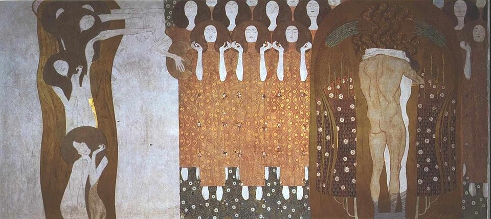
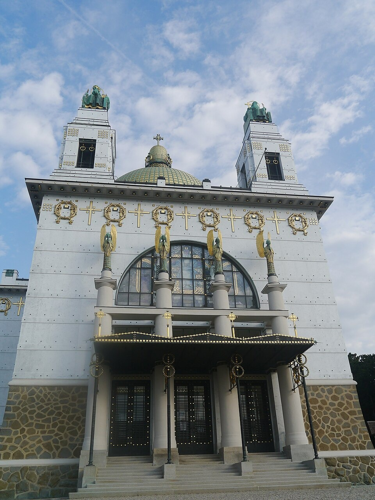

「給時代它的藝術，
給藝術它的自由。」
1897 年，克林姆與一群藝術家從保守的藝術家協會中另起爐灶。分離派讓繪畫、建築、設計與展覽空間彼此呼應：花朵、幾何、金箔與流動的線條，不只是裝飾，而是要讓日常生活也能容納現代藝術。

一座即將轉向現代的城市
從環城大道的歌劇院到診間、軍校與工人街區，這部影集裡的維也納既華麗又緊張。帝國制度仍在運作，社會的階級與偏見仍在場；另一方面，藝術家、建築師與思想家正各自尋找新的語言。
WIENER SECESSION · 1897
「給時代它的藝術，
給藝術它的自由。」
1897 年，克林姆與一群藝術家從保守的藝術家協會中另起爐灶。分離派讓繪畫、建築、設計與展覽空間彼此呼應：花朵、幾何、金箔與流動的線條，不只是裝飾，而是要讓日常生活也能容納現代藝術。
讓建築、展覽、平面與音樂形成同一個感官世界。
金色、花紋與幾何，是人物情緒與思想的延伸。
不再只重複歷史樣式，而是回應一個快速改變的社會。
一幅可閱讀的壁畫
1902 年的第十四屆分離派展覽，以貝多芬為主題。克林姆將對幸福的渴望、敵對力量、藝術與擁抱，展開為一條長達 34 公尺的視覺敘事。影集中的克拉拉與馬克斯站在這幅作品前，也站在一個「藝術能否改變人」的問題前。

故事的兩種觀看法
心理推想不是證據；它必須回到現場與人物之中，成為能被追查的線索。這種拉扯，正是影集最迷人的節奏。
同一座城市，不同的入口

馬勒的舞台與莫札特的《魔笛》，讓城市的聲音滲入案件。

精神醫學與現代建築，在同一時代尋找理解人的新方法。

權力與貧困、展示與日常，都壓縮在這座帝國首都裡。
觀看提示
它們不是佈景而已；它們說著那個年代相信什麼、害怕什麼，又想走向哪裡。